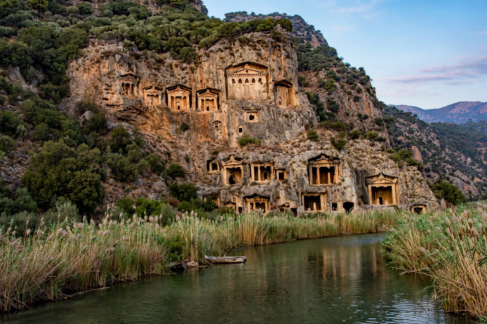

| Caria | |
|---|---|
| Location | South-western Anatolia (modern Turkey) |
| Boundaries | Lycia (south), Lydia (north), Phrygia/Pisidia (east), Aegean (west) |
| People | Carians |
| Capital | Halicarnassus (under the Hecatomnids) |
| Dynasties | Lygdamid; Hecatomnid |

Caria (from Greek: Καρία, Karia) was a region of western Anatolia extending along the coast from mid-Ionia south to Lycia and east to Phrygia. Inhabited by the Carians, a people whom the Greeks regarded as among the most ancient in Anatolia, Caria is best known for the Hecatomnid dynasty of the 4th century BC, whose satrap-king Mausolus built the Mausoleum at Halicarnassus, one of the Seven Wonders of the Ancient World.
Caria's rugged interior of mountain ridges and river valleys — the Maeander (Büyük Menderes) in the north and the Indus and Calbis in the south — supported inland cities such as Mylasa, Alabanda, Aphrodisias and Kaunos, while its indented coast hosted Greek-founded ports including Halicarnassus (modern Bodrum), Cnidus and Iasos. The Carians spoke an Anatolian language, written in their own Carian alphabet; Herodotus, himself from Halicarnassus, reported the Carians' claim to be autochthonous and credited them with innovations such as shield handles and helmet crests. Carian mercenaries served famously in Egypt, where they left graffiti at Abu Simbel.
Caria came successively under Lydian, then Persian (Achaemenid) rule in the 6th century BC. In the 5th century the coastal cities joined Athens's Delian League while native dynasts, the Lygdamids — including Artemisia I, who fought at Salamis in 480 BC — ruled Halicarnassus. In the 390s BC the satrap Hecatomnus founded the Hecatomnid dynasty; his son Mausolus (r. 377–353 BC) moved the capital to Halicarnassus, refortified the region's cities, and extended Carian power over Lycia and parts of Ionia. Mausolus's sister-wife Artemisia II succeeded him and completed his tomb.
Alexander the Great conquered Caria in 334 BC and restored the exiled Hecatomnid princess Ada as satrap. Thereafter Caria passed among the Hellenistic kingdoms — Ptolemaic, Seleucid, Rhodian and finally Roman rule, becoming part of the province of Asia and later a separate Roman province under Diocletian. The region is rich in remains: the rock tombs of Kaunos and Telmessos, the stadium and marble streets of Aphrodisias, and the oracle sanctuary of Zeus at Labraunda.